5B
| Fifth Gear Disassembly and Reassembly |
Disassembly
1)Remove gear shift & select shaft assembly. 
2)Remove side cover bolts and take off transaxle side cover (1) using special tool.

NOTICE:
Oil leakage will occur if side cover is distorted.
Be careful not to distort side cover when it is removed from transaxle left case.
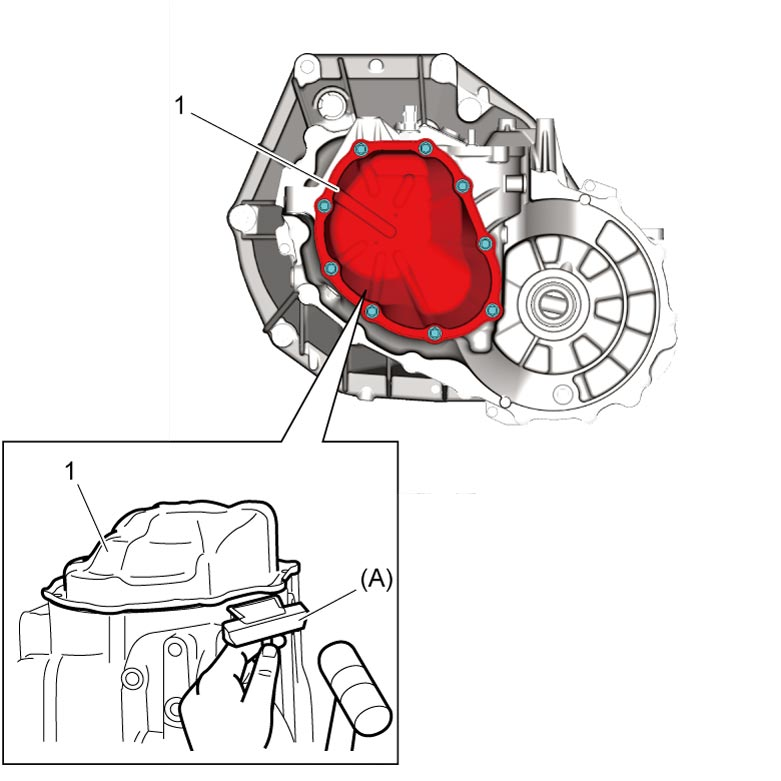
 "Expand image")
3)Unfasten caulking of input shaft nut (3).
4)Arrange a double-gear-engagement shifting both low speed gear shift shaft (1) and high speed gear shift shaft (2) in arrow direction, and then remove input shaft nut and washer.
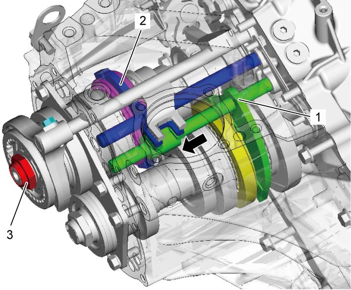
 "Expand image")
5)Remove 5th gear shift fork bolt (1).
6)Remove 5th gear shift fork (2) and 5th gear all together. Use gear puller for removal if spline fitting of hub is tight.
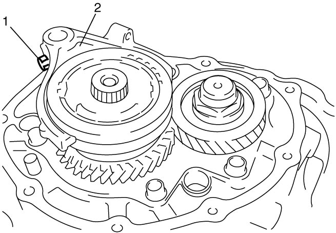
 "Expand image")
7)Unfasten caulking of countershaft nut (2), install input shaft 5th gear (1) and special tool to stop rotation of shafts, and then remove countershaft nut (2).
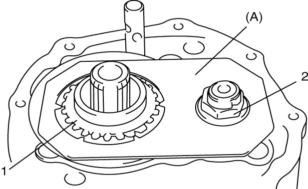
 "Expand image")
8)Remove input shaft 5th gear, needle bearing and then countershaft 5th gear (1). Gear puller (2) is necessary if spline fitting of countershaft 5th gear is tight.
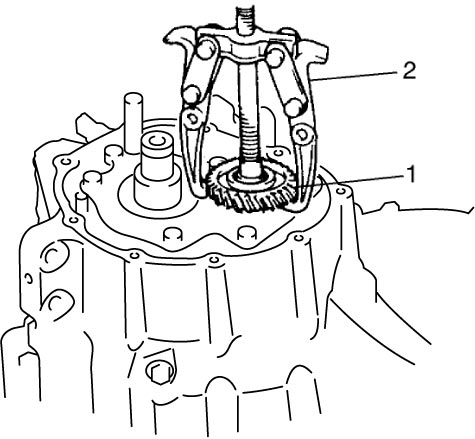
 "Expand image")
Reassembly
1)Install countershaft 5th gear (1) to countershaft as shown in figure.
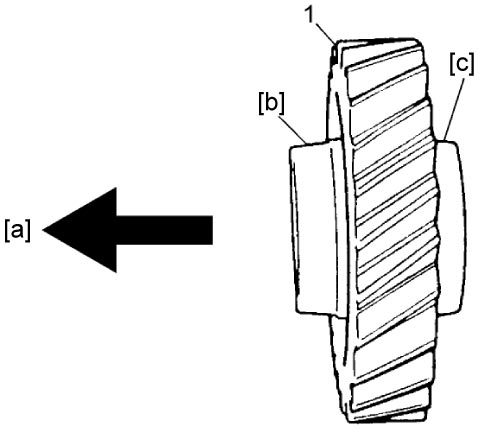
 "Expand image")
| [a]: | Countershaft side | [c]: | Short flange (Outside) |
| [b]: | Long flange (Inside) |
2)Apply transaxle oil to needle bearing (3), and install it to input shaft.
3)Install input shaft 5th gear (1) to input shaft.
4)Install special tool to stop shaft rotation.
5)Tighten new countershaft nut (2) to specified torque, and caulk nut securely.
NOTICE:
•Once countershaft nut is removed, it will no longer have necessary fastening performance.
Never reuse the countershaft nut.
•If caulking part (4) of countershaft nut is cracked while caulking, the nut will spoil locking performance.
Replace the nut with new one again.
Never reuse the countershaft nut.
•If caulking part (4) of countershaft nut is cracked while caulking, the nut will spoil locking performance.
Replace the nut with new one again.
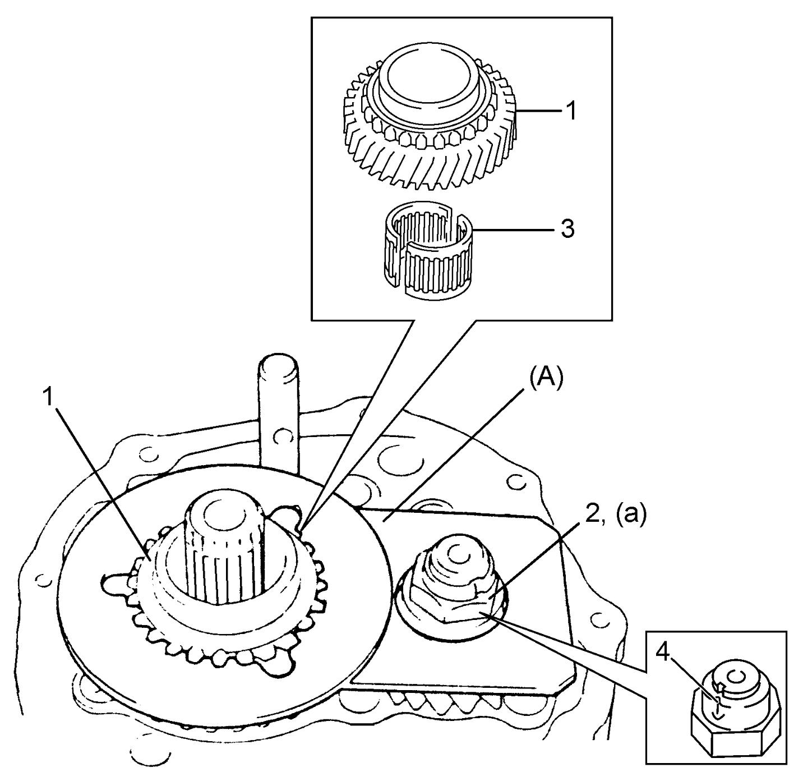
 "Expand image")
6)Assemble 5th speed synchronizer sleeve (1), 5th speed synchronizer hub (2), 5th speed synchronizer levers (3) and 5th speed synchronizer ring (4) as follows.
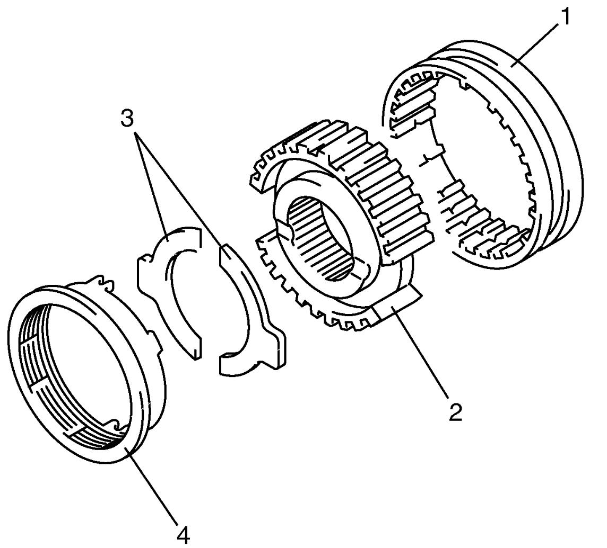
 "Expand image")
a)Install 5th speed synchronizer hub (1) to 5th speed synchronizer sleeve (2) in specified direction as shown in figure.
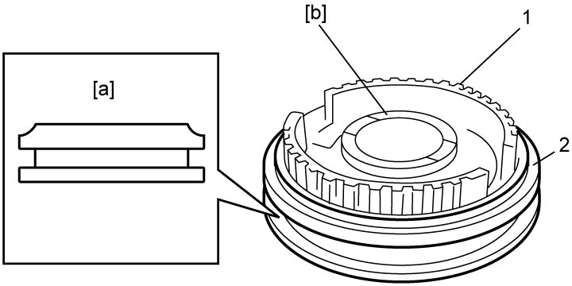
 "Expand image")
| [a]: | Chamfered side | [b]: | Long boss |
b)Fit 5th speed synchronizer levers (1) to 5th speed synchronizer hub (2) by aligning protrusion (3) of 5th speed synchronizer levers with groove of 5th speed synchronizer hub.
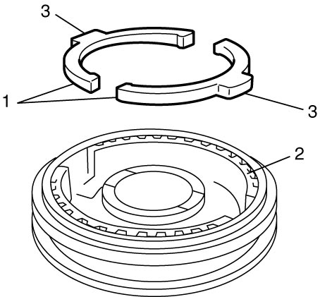
 "Expand image")
c)Install 5th speed synchronizer ring (1) to 5th speed synchronizer hub (2) in specified direction as shown in figure.
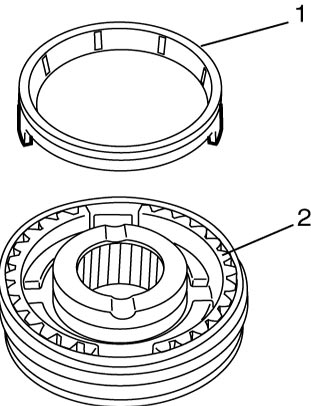
 "Expand image")
7)Fit 5th gear shift fork (1) to 5th speed synchronizer sleeve (3) and 5th speed synchronizer hub (2) assembly, and install them into input shaft and gear shift shaft by aligning punch mark (4) with groove (5) on input shaft.
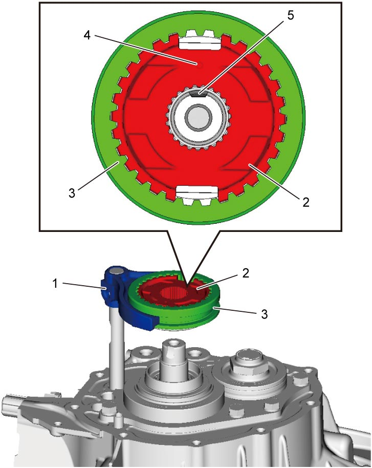
 "Expand image")
8)Tighten 5th gear shift fork bolt (1) to specified torque.
NOTICE:
5th gear shift fork bolt is pre-coated with adhesive. If the bolt is reused, it may work loose.
Replace the 5th gear shift fork bolt with new one once it is removed.
9)Arrange a double-gear-engagement shifting both low speed gear shift shaft (3) and high speed gear shift shaft (2) in arrow direction.
10)Install washer and new input shaft nut (4).
11)Tighten input shaft nut to specified torque, and then caulk nut securely.
NOTICE:
•Once input shaft nut is removed, it will no longer have necessary fastening performance.
Never reuse the input shaft nut.
•If caulking part of input shaft nut is cracked while caulking, the nut will spoil locking performance.
Replace the nut with new one again.
Never reuse the input shaft nut.
•If caulking part of input shaft nut is cracked while caulking, the nut will spoil locking performance.
Replace the nut with new one again.
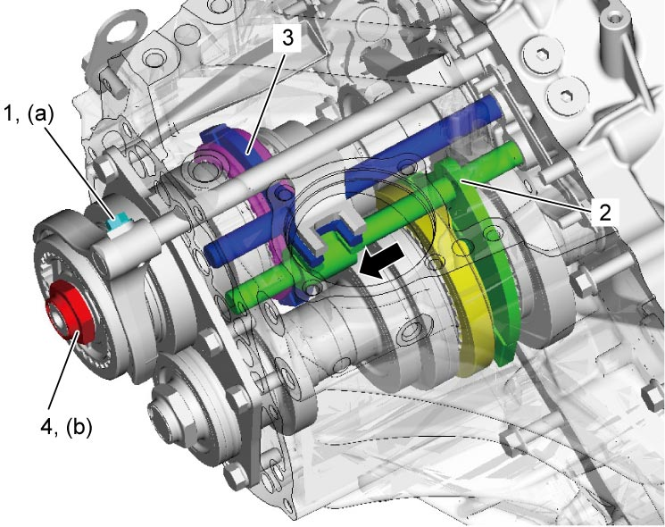
 "Expand image")
12)Install side cover (1) to left case as follows.
a)Clean mating surfaces of left case and side cover.
b)Apply specified amount of sealant to side cover as shown in figure.
Sealant amount for side cover
“a”: 1.5 mm (0.059 in.)
c)Mate side cover with left case.
d)Tighten side cover bolts to specified torque.
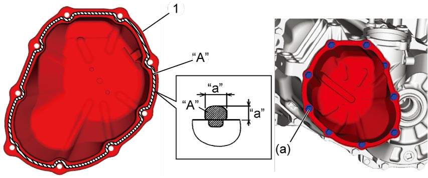
 "Expand image")
13)Install gear shift & select shaft assembly.